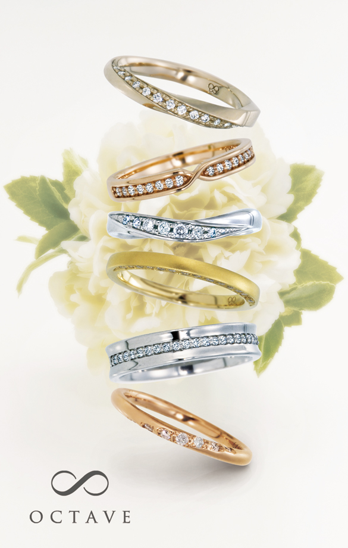

OCTAVE / MARRIAGE RING
OCTAVE コレクション
OCTAVE
デザイン別の掲載価格を見る
商品説明・素材・掲載価格
Ruelleリュエル｜ふたりの道
これまでの二人と これからの二人
どんなときも明日に繋がるこの道を
ずっと二人で歩いていく
Jurerジュレ｜誓い
重なり合い 支え合う ふたりのこころ
ずっと ずっとこれからも・・・
心に誓う 永遠の愛
Nouerヌウェ｜結び
手をとりあって
ふたりのリズムで
時を結び こころを結ぶ
Eclatエクラ｜輝き
ふたりの未来を示す一筋の光
きらきらと輝くもの
あたたかく光さすものは いつも二人の心の中に
Bonheurボヌール｜幸福
ささやかな毎日が
かけがえのない毎日
いま 溢れてくる「ありがとう」
Ensembleアンサンブル｜一緒に
永遠にきらめく音色
これからもずっと一緒に
心ひとつにかさね 響きあうふたりの二重奏
上から
Ruelleリュエル｜ふたりの道
K18 ChG
Lady’s : 1290199 ¥90,000 + TAX
Jurerジュレ｜誓い
K18 PG
Lady’s : 1290208 ¥82,000 + TAX
Nouerヌウェ｜結び
Pt900
Lady’s : 1290241 ¥107,800
Eclatエクラ｜輝き
K18 YG
Lady’s : 1290177 ¥93,500
Bonheurボヌール｜幸福
Pt900
Lady’s : 1290221 ¥137,500
Ensembleアンサンブル｜一緒に
K18 PG
Lady’s : 1308779 ¥80,300
公式商品ページの記載を2026年10月5日に確認。最新価格、税込／税別、取扱店舗、納期は店舗にご確認ください。
この指輪について相談する ↗既存公式の商品ページを確認する ↗ご試着・ご注文の前に
サイズと着け心地、展示・取扱店舗、刻印や素材変更の対応、受取希望日、購入後のサイズ直しや修理条件をご確認ください。商品名を添えてご相談いただくと、ご案内がスムーズです。
愛知・岐阜の店舗案内 →